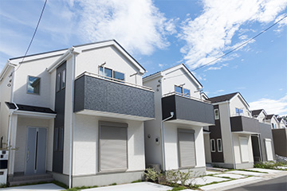
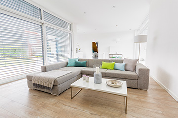

すぐに売りたい場合に最適な「不動産買取」
所有している不動産をできるだけ早く売却したいという方におすすめなのが、不動産会社に直接買い取ってもらう「不動産買取」です。仲介売却・任意売却といった一般的な売却方法だと、高く売れる可能性がある一方で売却には時間がかかります。その点、不動産買取の場合は、買い主様を探す必要がないため時間はまったくかかりません。
ここではさまざまな理由から、とにかくスピード重視で不動産を売却したい方におすすめの「不動産買取」についてご紹介していきます。
すぐに家や土地を売りたいときに有効です

「不動産買取」とは、売り主様が所有している不動産を、できるだけ早く売却したい場合に最適な方法です。不動産を売却するための方法としては、他に任意売却や仲介売却などもありますが、どうしても売却までに時間がかかってしまうのがポイント。そのため、急いで売却したい事情がある場合には向きません。
不動産買取を選んだ場合、買い主は不動産会社になります。そのため、時間をかけて条件に合う買い主様を探す必要がありません。任意売却や仲介売却と比較すると価格は下がる傾向にありますが、もっとも早く不動産を現金化できる方法です。
不動産買取を選択する理由はこちら
仲介手数料がかかりません
仲介売却を選択した場合、間に入った不動産会社に成功報酬として、仲介手数料を支払う必要があります。一方で、買取の場合は不動産会社自体が買い主になるため、仲介手数料は発生しません。
短期間での現金受け取りが可能です
仲介売却や任意売却の場合は、買い主様が現れない限り現金化できません。その点、不動産買取なら、不動産会社がそのまま買い主になるため時間を大幅に短縮できます。とにかく現金化が早いことが、不動産買取のもっとも大きなメリットです。
瑕疵担保責任が免除されます
不動産買取を選択した場合、一般的な売却だと発生する瑕疵担保責任は免除されます。そのため、万が一不動産に問題が発生した場合でも、後から責任を追及される心配はありません。

内覧の必要がなく手間がかかりません
不動産を売却する場合は、買い主様を探すために内覧を積極的に行う必要があります。まだ住んでいる場合には家族にもストレスがかかってしまいますが、不動産買取であれば内覧を実施する必要がありません。
まったく売れない物件でも買い取ってくれる可能性があります
条件などによって売れなかった物件でも、不動産買取の対象になる可能性があります。そのため、買い主様が見つかる可能性がないようなら、不動産買取を選択するのが有効です。
基本的な不動産買取の流れをおさらいしておきましょう
- 1売却相談
- 売却にかかる費用や税金、おおよその売却額などを令和都市開発に相談してください。令和都市開発側からは、不動産買取が仲介売却とどう違うかについて詳しくご説明します。
- 2買取価格の提示
- 令和都市開発で直接買い取る場合の価格を提示します。媒介契約を結ぶ必要はなく、仲介手数料も一切かかりません。
- 3買取契約
- 不動産買取の内容についてご納得いただけましたら、いよいよ契約です。契約が締結したら、売り主様のご都合に合わせて引き渡し時期などを決めていきます。
- 4お支払い/引き渡し
- 契約完了後、不動産の代金が支払われます。また、引き渡しのスケジュールに沿って引き渡しも行われ、不動産買取は完了です。